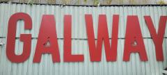

Knock Knock.... Who's There?
The last time I was at Bristol airport I was one of 10 people in the whole airport destined for Bilbao, the world was on the cusp of losing its mind and little did I know but I was jetting directly into the epicenter of the pandemic and I'd barely make it back before El Presideñtè in Spain would lock the country down. Fast forward and I've just had to navigate at least 5,000 people in security and arm wrestle an old lady for the last bacon roll and semi comfortable seat in the airport - I've never seen it so busy.
Hallelujah... Life is finally back to normal and with it the good ship Jimbo Tours prepares to set sail again. All is back to normal right? WRONG.
When my early morning alarm call rang this morning and I stared down at my freshly sent boarding pass from Jimbo himself I saw a destination that raised more eyebrows than the onlookers who witnessed me slap the old gal for the last bacon roll. I am about to jet off to Knock in West Ireland.
Why is this destination such a surpirse? Well given that in the 14 Jimbo Tours that preceed this adventure we have barely set foot in Western Europe it is somewhat of a surprise that we are not only turning left out of the UK to Ireland but the furthest Westerly point we could possibly fly to in Ireland itself. In summary, we've never stuck a dot so far left on the map. It seems mankind's "new normal" doesn't respect historical JT traditions... Hence raised eyebrows.
As is customary I have no idea where we are going and who I might encounter over the next few days. A magical mystery tour of the ROI, a ferry to Iceland or helicopter to Lisbon. Your guess is as good as mine but JT15 is officially up and running and only our leader knows what is in store.
All I do know is that I'm strapped in and ready to set sail again this year and indeed every year that follows. As far as the door that I just knocked on well who knows where it will be or who will open it but over the next few days we will find out.
Let's just hope the old bird with a black eye and no bacon roll isn't sat next to me on the flight. Wish me luck.
Shauny G.
Photographs
{kind=link}
{kind=link}

{kind=link}
{kind=link}
{kind=link}
{kind=link}
{kind=link}
{kind=link}